Project Details
Deploy a WordPress Website using various AWS services

Project information
- Category: AWS project
- AWS Used services: EC2 instances ,NAT gateways ,RDS ,Application load balancer ,Route 53,Auto scaling group ,Certificate manager ,EFS and ec2 bastion host
- Project date: 15 October,2024
Objective
deploy dynamic website on AWS. Also Architect the way to use reference architecture to host this website using various AWS services and illustrate how they work together.
Amazon web services that used :
VPC Reference Architecture
We will start by creating a custom 3-tier VPC using VPC reference architecture above. In a 3-tier reference architecture, our infrastructure is divided into 3 tiers.
Tier 1 — Two public subnet which will hold the resources such as NAT gateway, load balancer, and bastion host
Tier 2 — Two private subnet contains ec2 with web servers
Tier 3 — another private subnet which will hold our database (RDS)
We will duplicate these subnets across Two availability zones for high availability and fault tolerance,If an AZ does down for some reason, the application has the ability to automatically scale resources to another AZ, without affecting the rest of the application tiers
part1 :Build the underlying network architecture
In the management console,choose the region where you want to create your VPC for us , we will select us-east-1(N-virginia)
Navigate to amazon VPC https://console.aws.amazon.com/vpc/
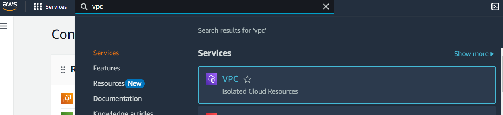
At VPC section ,press create VPC
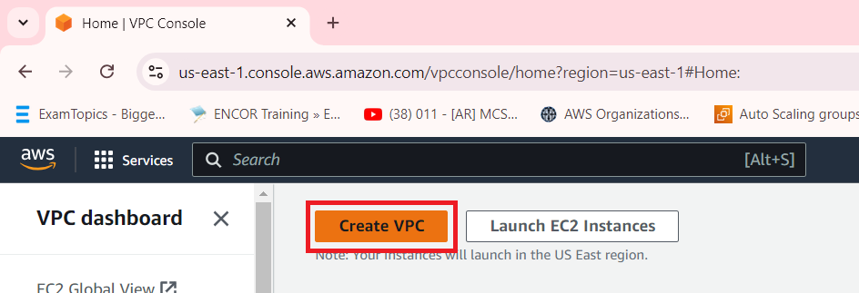
we will name it as site-vpc ,And enter 10.0.0.0/16 in the IPv4 CIDR block ,Also we will leave the tenancy to default
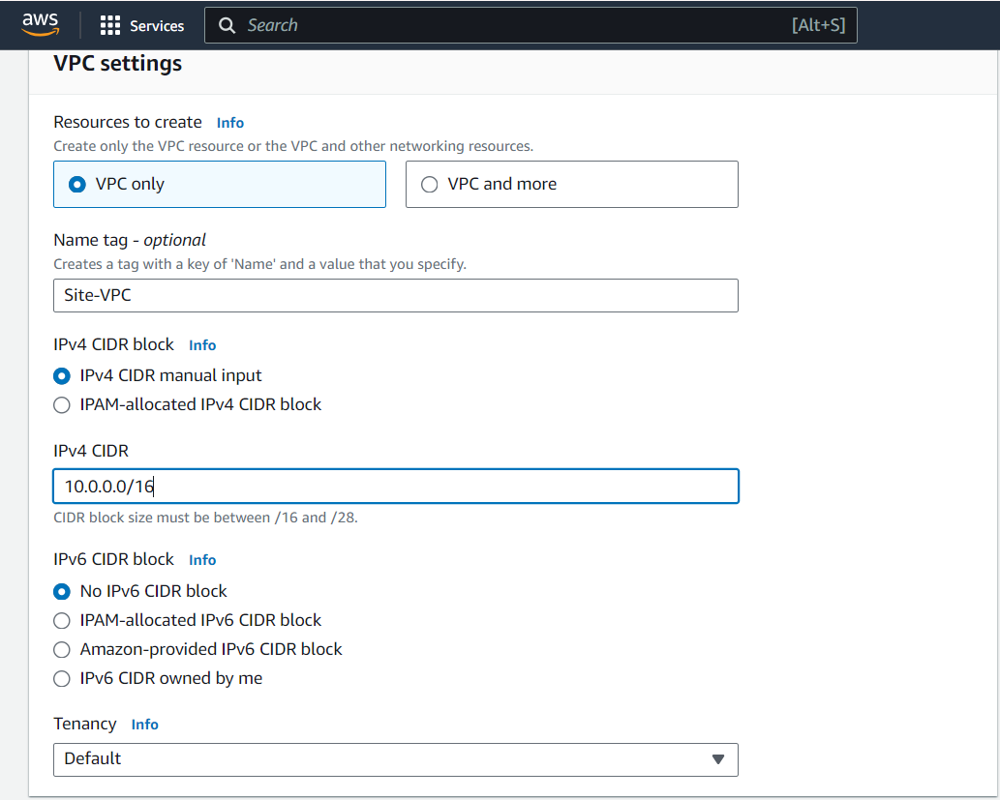Let’s click Create VPC the bottom right.
Select the VPC that we just created and from action select Edit VPC setting
Under DNS settings Just that Enable DNS hostnames and then click Save
Internet gateway
it allows the resources such as ec2 instances in a VPC to connect to the internet , Internet gateway located at
the left side menu of our VPC
click on create internet gateway , give it a name My-site-internet-gateway and click Create internet gateway
from actions select attach to VPC
select our vpc to attached it .

Public subnets
Let's create first public subnets in two availability zones , and on the left side on the bar filter the vpc's based
on our site-vpc
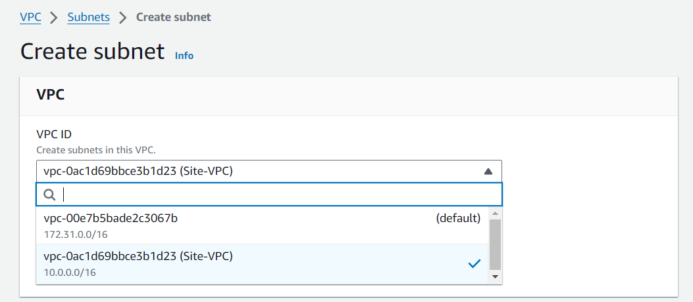
Let’s give our subnet a name. Based on our reference architecture, we will call it Public-az1 and put this in
the us-east-1a Availability Zone,The CIDR block should be 10.0.0.0/24 and click Create subnet
For the second subnet ,let's call it public-az2, with CIDR block 10.0.1.0/24 and click Create subnet
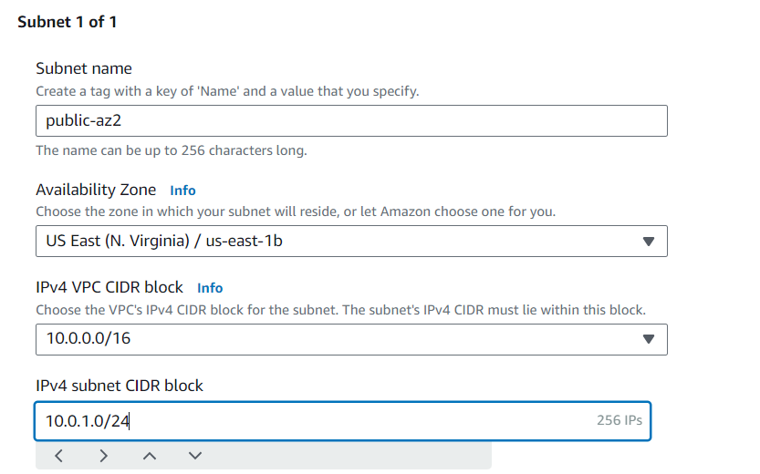let's activate the auto assign setting of public ip address,for public-az1 choose action then edit subnet settings, check Enable auto-assign public ip address .
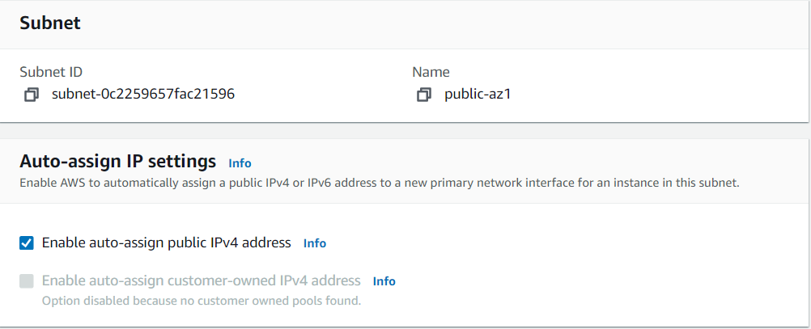
Now let's create route table to route the subnets to the internet gateway , In the left side choose Route tables
,The route table that we see was set up when we created the VPC , This is the main route table and its private by default.
Click Create route table. Name it public route-Table. Make sure to select site-VPC under VPC before clicking Create route table
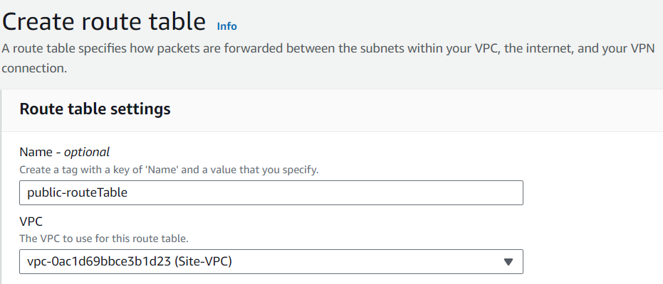Now we just add a public route to the table , To route the traffic to the internet , by choosing Edit Route
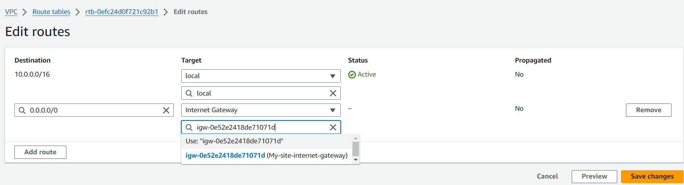
Associate the 2 public subnets we created earlier with this route table. Click subnet associate then Edit subnet associate .
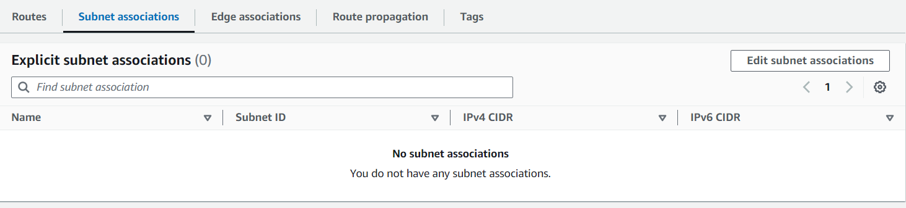check the two public subnets to add them then click save association
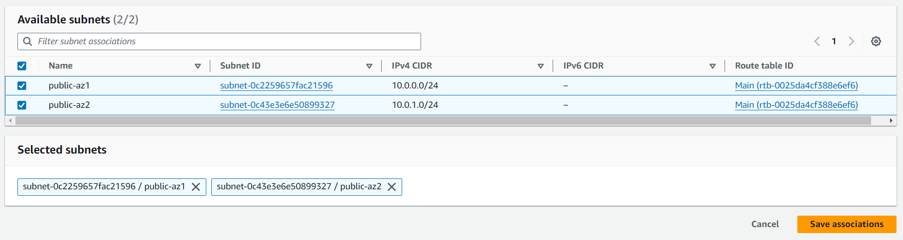After we finished the public subnets , Let's create the private subnets .
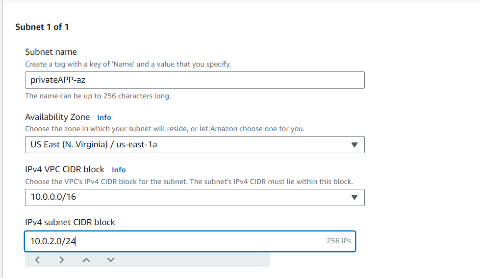Then we have to create Another private subnet in second availability zone with CIDR 10.0.3.0/24 , and Database-subnets in both availability zones A and B with CIDR 10.0.4.0/24 and 10.0.5.0/24 respectively .
We associate the Public subnets to the public route table ,in that section there was another route table called main route table that table will contain all subnets that not associate with any table .
part2 : Create NAT Gateway :
NAT reference Architecture
From left menu select NAT gateway , then click create NAT gateway
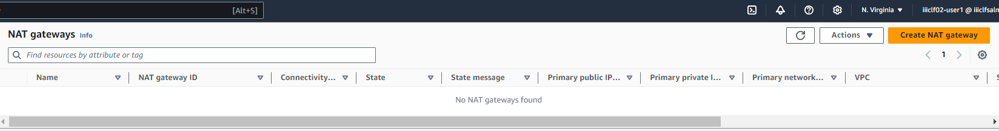AT first we will create one at public subnet 1 , and following the same steps , we will create another in public subnet 2 , click Allocate Elastic IP .
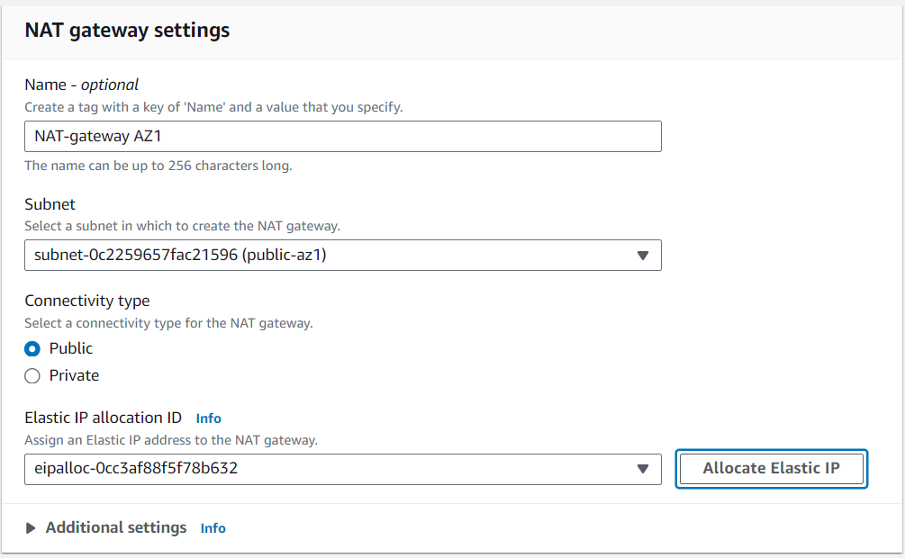It should bring us to the NAT gateway created successfully page
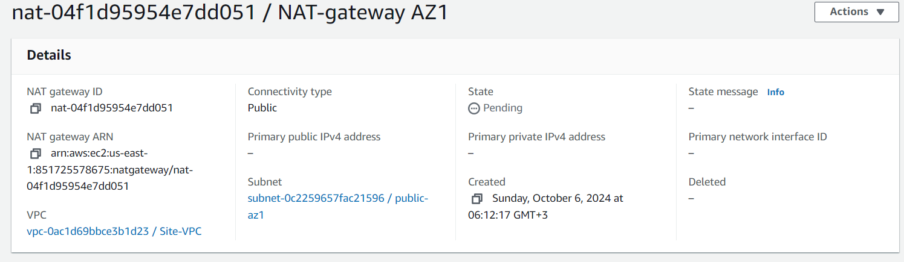Next is we need to create a route table. We will call it Private Route Table AZ1. Select Route tables at the left side and Create route table ,We will call this Private Route Table AZ1 in site-VPC then hit Create route table
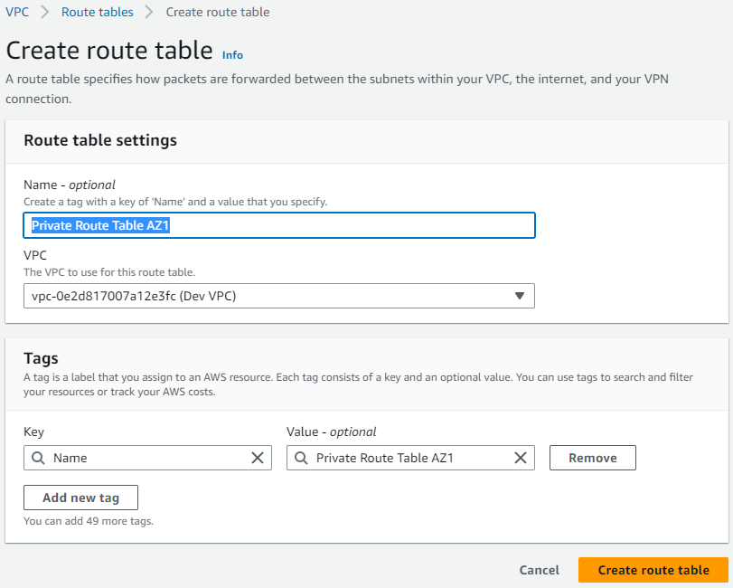Under routes let's add the route to the internet thought Nat gateway in public subnet 1
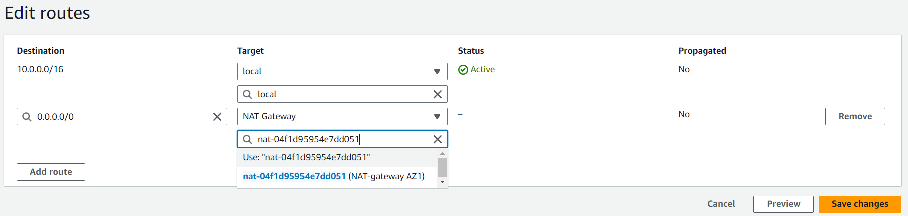In subnet association let's associate Private Route Table AZ1 with Private App Subnet AZ1 and Private Data Subnet AZ1.
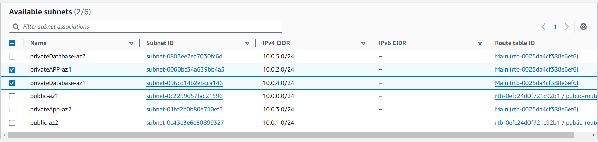we will follow the steps with NAT Gateway 2 and App Subnet AZ2 and Private Data Subnet AZ2.
Part 3: Create Security Groups
there are six security groups we will need in these project :
At the left hand side click security groups,Click create security group
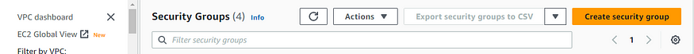1. ALB security group :
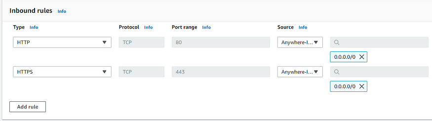Port: 80 (http) and 443(https) with Source: 0.0.0/0
2. SSH security group :
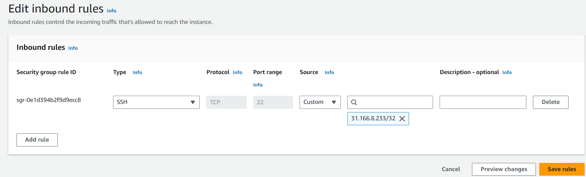Port 22 with Source my IP Address
3. Webserver security group :
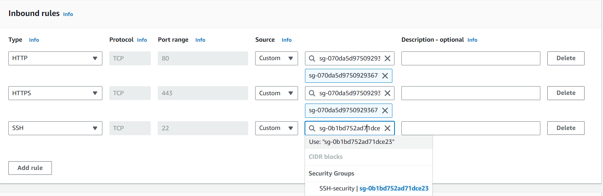4. Database security group :
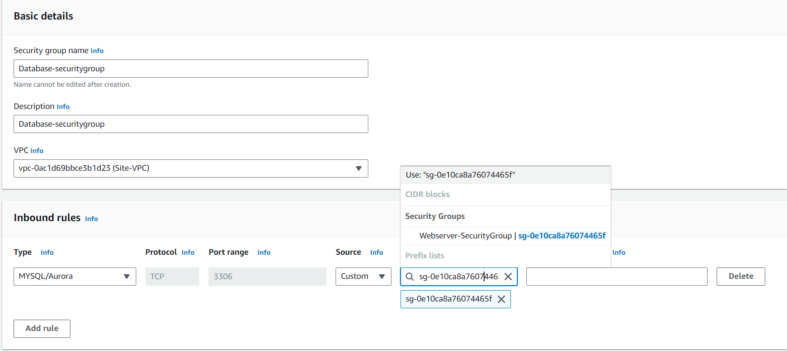Port: 3306 Source: Webserver Security Group
5. EFS security group :

6. NFS security group :

we’re going to limit the source to EFS security group
Part 4: Create the RDS Instance
Now we have to create data base in private subnets , search for RDS at management console .
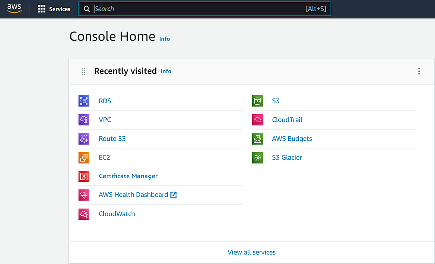the first thing that we need to create are the subnet groups — this allows us to specify which subnets we want to create our RDS database in.
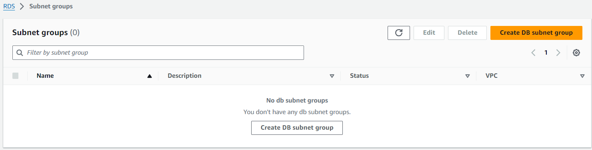click create DP subnet group .
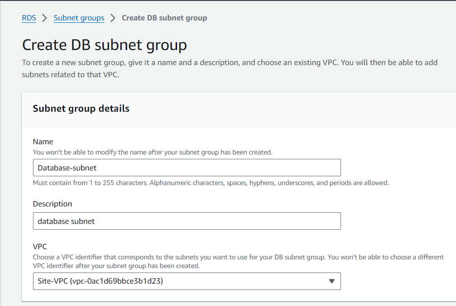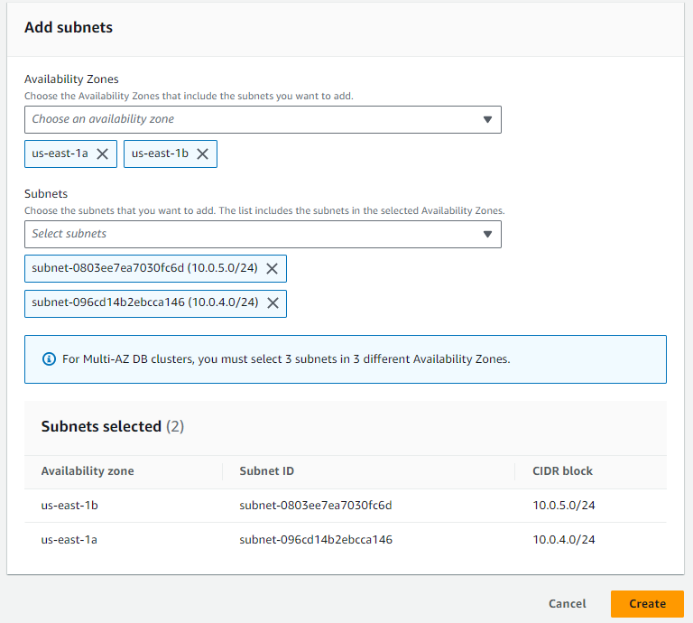
Let's create the RDS Database , click create database
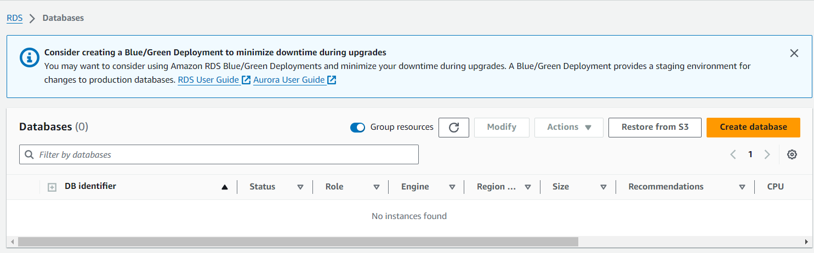RDS choosing settings:
Database creation method : Standard create
Engine options: Mysql engine option: mysql 5.7.44
DB instance identifier: database-1 DB instance class : burstable classes (db.t3.micro)
Storage: General purpose SSD (gp3) Virtual private cloud (VPC) : site-vpc
DB subnet group: database-subnet Existing VPC security groups: database-securitygroup
Availability Zone : us-east-1a
Once I've created my RDS instance, I won’t be able to see the password for the RDS instance in the management console. That is why it is important to save the credentials.Click View credentials details above to view The credentials the last time.

below the Configuration tab, there are more information about the database,find the endpoint information for that database
Part 5: Create the Elastic File System (EFS)
We will create an elastic file system with mount targets in the private data subnets in each AZ. The EFS will allow the webservers in the private app subnets to pull the application code and configuration files from the same location.
In management console ,search for EFS ,Then click create file system then customize .
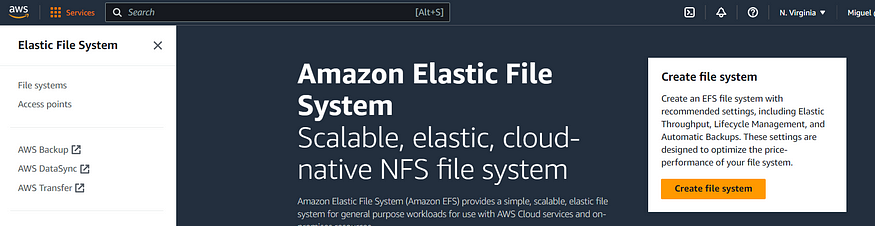

To don't have additional charging uncheck Enable encryption of data at rest

Under Network use the following information

for subnets choose the database private subnets, And for security group choose EFS SG ,Review the setting then click Create

To find the information to mount EFS, click the File system ID

Click Attach to find the information that you use to mount the file system .
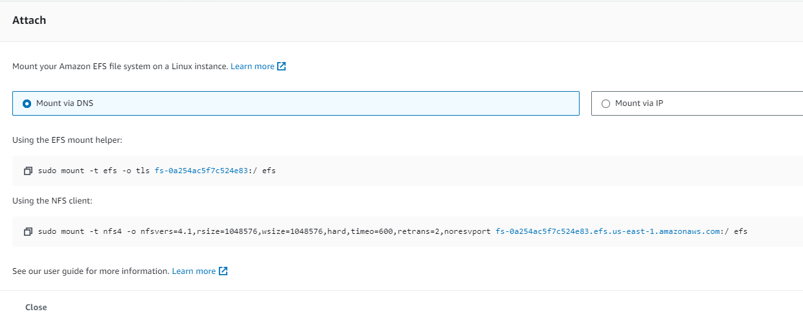Part 6: lunch the setup server:
I will setup ec2 instance in public subnet AZ1, To install the wordpress files and configure it , In management console type EC2 then lunch instance
we will call it setup server and adjust the setting ,As shown in the pictures below
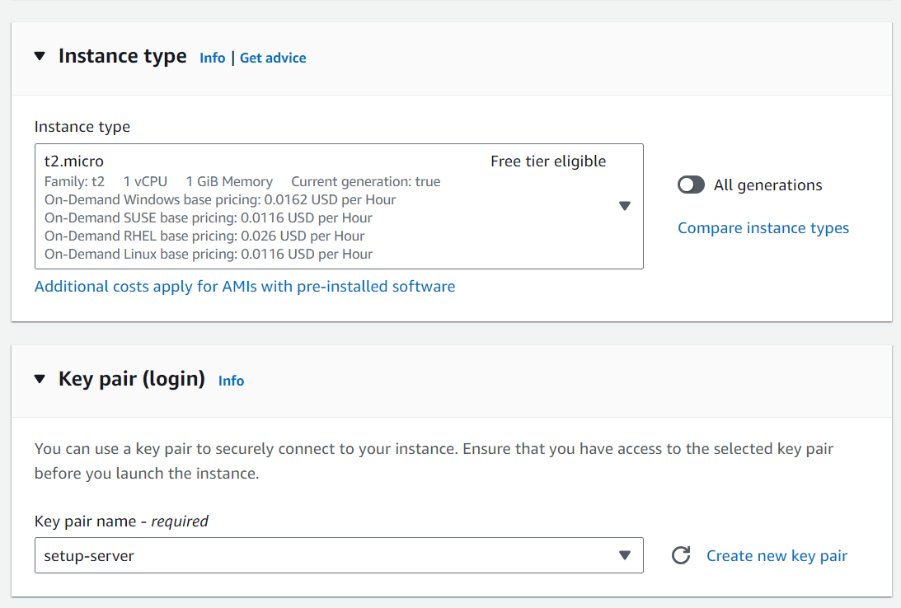
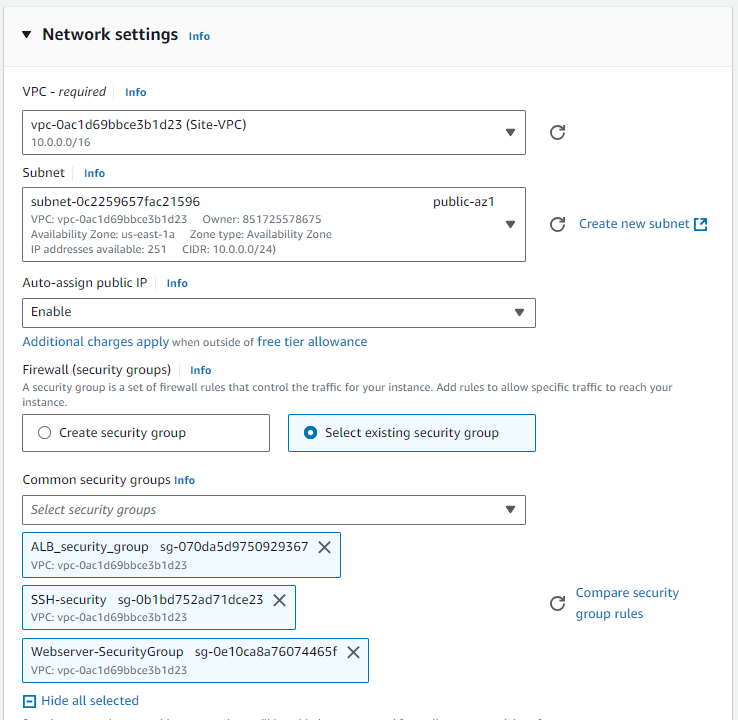
Let’s open the instance summary and copy the public IP :
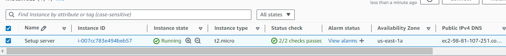
Open PuTTY or any other SSH and telnet client,In hostname section type ec2-user@the public IPv4 address of ec2 instance.
Under Connection, click the + sign under SSH ,Select the + sign under Auth. Under Auth select Credentials,Below Private key file for authentication, click Browse
choose the file then click save
successfully, we SSH into the the setup server instance .
Part 7: Install WordPress
we will run several commands at the instance to install wordpress files then move it EFS , but first just copy the NFS Client link at attach section EFS ,that we just created
$ yum update -y
$ sudo yum -y install amazon-efs-utils
$ mkdir -p /var/www/html
$ sudo mount -t nfs4 -o nfsvers=4.1,rsize=1048576,wsize=1048576,hard,timeo=600,retrans=2,noresvport fs-05485ac71c109013a.efs.us-east-1.amazonaws.com:/ /var/www/html
let's check if our EFS is mounted correctly by write df -h and press enter.
it's mounted correctly in html directory
In next step we will instal Apache server
$ sudo yum install -y httpd httpd-tools mod_ssl
$ sudo systemctl enable httpd
$ sudo systemctl start httpd
Now will install PHP version 7.4
$ sudo amazon-linux-extras enable php7.4
$ sudo yum clean metadata
$ sudo yum install php php-common php-pear -y
$ sudo yum install php-
{cgi,curl,mbstring,gd,mysqlnd,gettext,json,xml,fpm,intl,zip} -y
in next we will set permission for web server
$ sudo usermod -a -G apache ec2-user
$ sudo chown -R ec2-user:apache /var/www
$ sudo chmod 2775 /var/www && find /var/www -type d -exec sudo chmod 2775 {} \;
$ sudo find /var/www -type f -exec sudo chmod 0664 {} \;
$ chown apache:apache -R /var/www/html
then we will download the wordpress and move the file to html directory
$ wget https://wordpress.org/latest.tar.gz
$ tar -xzf latest.tar.gz
$ cp -r wordpress/* /var/www/html/
Now will create wp-config.php file , then edit it to enter the information of our RDS instance
$ cp /var/www/html/wp-config-sample.php /var/www/html/wp-config.php
$ nano /var/www/html/wp-config.php
from database in RDS copy the database name and username and password then paste it in it's in there define function , and in connectivity and security copy the Endpoint and paste under Database hostname
to save the changes ctrl+X the y for yes then enter
the last command is to restart our web server
$ service httpd restart
after that open the ec2 instance dashboard then copy the Public Ipv4 , then paste in address bar for your browser.
fullfil all required data for you website then press save
let's open admin page using the credentials that we just created
Part 8:Create an Application Load Balancer
Before creating ALB first we will lunch two instances in private app subnets, the same steps as previous instance
,use Webserver Security Group ,and use User data
it's run this command when instance being online ,those commands is the same that we use before to install apache ,php and sql servers
#!/bin/bash
yum update -y
sudo yum install -y httpd httpd-tools mod_ssl
sudo systemctl enable httpd
sudo systemctl start httpd
sudo amazon-linux-extras enable php7.4
sudo yum clean metadata
sudo yum install php php-common php-pear -y
sudo yum install php-{cgi,curl,mbstring,gd,mysqlnd,gettext,json,xml,fpm,intl,zip} -y
sudo rpm -Uvh https://dev.mysql.com/get/mysql57-community-release-el7-11.noarch.rpm
sudo rpm --import https://repo.mysql.com/RPM-GPG-KEY-mysql-2022
sudo yum install mysql-community-server -y
sudo systemctl enable mysqld
sudo systemctl start mysqld
echo "fs-05485ac71c109013a.efs.us-east-1.amazonaws.com:/ /var/www/html nfs4
nfsvers=4.1,rsize=1048576,wsize=1048576,hard,timeo=600,retrans=2 0 0" >> /etc/fstab
mount -a
chown apache:apache -R /var/www/html
sudo service httpd restart
Let’s create a target group then we will put these instances in the target group to allow the ALB to route traffic to them

choose target group ,enter the information below then click Next
On this page, we will select the instances we want the ALB to route traffic to. Choose Webserver AZ1 and Webserver AZ2 then click Include as pending below then click create target group
At the left side select Load Balancers then Create load balancer
Enter the information as shown in picture below :
select ALB security group
In the ALB information copy the link ,Because we will use it to access our website
Anytime you change your domain address, you have to go to your wordpress settings and change your domain
address there as well then press save.
Part 9:Launch Bastion Host
Deploy an EC2 Instance in the Public Subnet:
Lunch a new instance in public subnet AZ1 and call it bastion host use SSH security group
Now that we've launched our EC2 instance in the public subnet, we'll proceed to download Pageant on our computer.

You will see the icon at the bottom right part of the taskbar.
Launch Pageant. We'll load the key pair that we used for SSH access to our EC2 instance into Pageant. Select Add Key
Go to the ec2 instance dashboard then copy the bastion host public ipv4, then go to the putty and paste it after ec2@
At the left side choose SSH then Auth check Allow agent forwarding then Ok.
It will open the bastion host instance type ssh ec2-user@ followed by the Private IPv4 address of your Webserver AZ1
we successfully access to the instance in the private subnet .
Part 10: Create an Auto Scaling Group
We are going to set up an auto-scaling group to automatically create and manage web servers in the private
application subnet.
First, we need to terminate the EC2 instances that were created manually. Navigate to the "Instances" section
within the EC2 Dashboard. Select both instances named Webserver AZ1 and Webserver AZ2, click "Instance State,"
and choose "Terminate." These instances will start terminating.
Next, we need to create our Launch Templates. These templates will include the configuration details for the EC2
instances that the auto-scaling group will use to launch new instances,I have created one before so i gust choose it
choose our vpc and private subnets .
For the Load Balancing section, we'll link our auto scaling group to the Application Load Balancer (ALB)
that we set up earlier.
Under Load Balancing, make the following selections:
a pre-existing load balancer.
balancer target group.
We want our auto scaling group to maintain two EC2 instances and the ASG can scale down to a minimum 1
instance or a maximum of 4 instances, click Next ,use another words in previous sentences
Let's configure our
auto scaling group to maintain a steady state of two EC2 instances. The auto scaling group will have the flexibility
to scale down to as few as one instance or up to a maximum of four instances. Once these settings are in place,
proceed by clicking "Next."
You should see two instances running, which were launched by the Auto Scaling Group (ASG). These instances
can be identified by the tag names we assigned to them (ASG-Webserver). Let's wait for them to pass the Status check.
Next, let's verify that the Health status of the Registered targets is healthy. You can do this by navigating
to Target Groups under the Load Balancing section